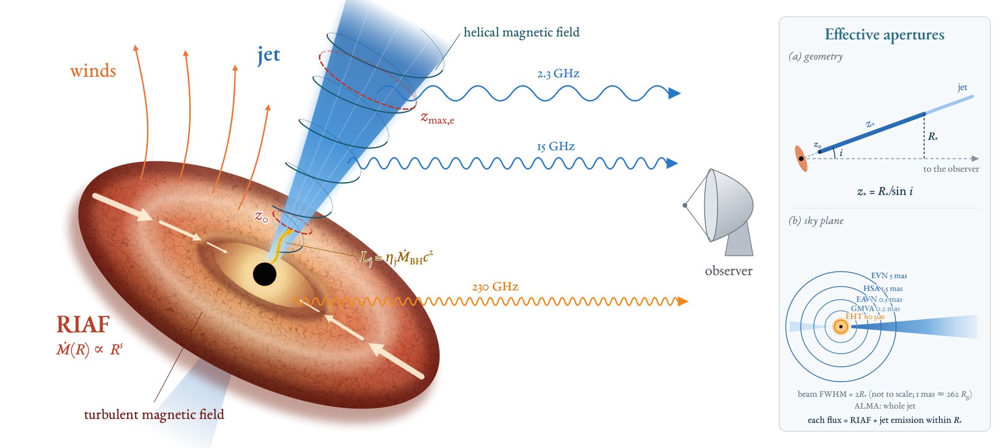
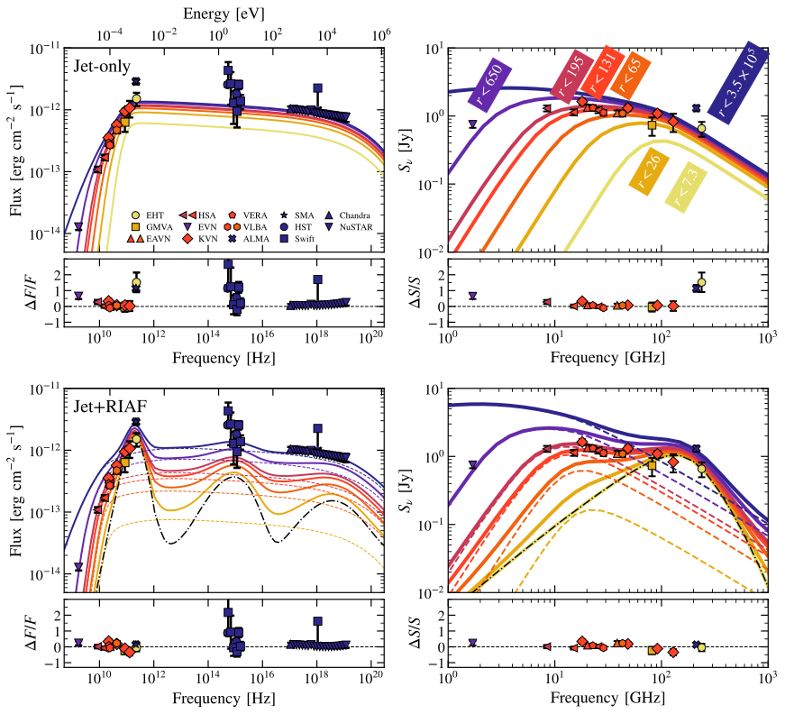
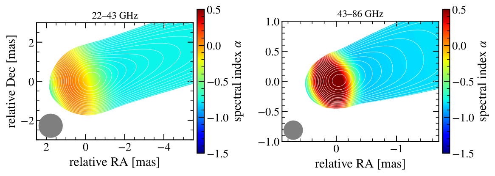
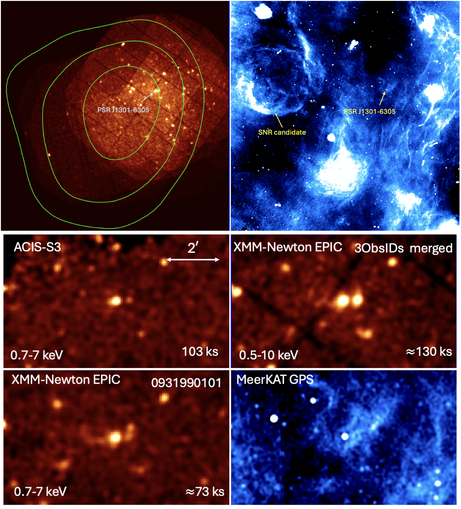
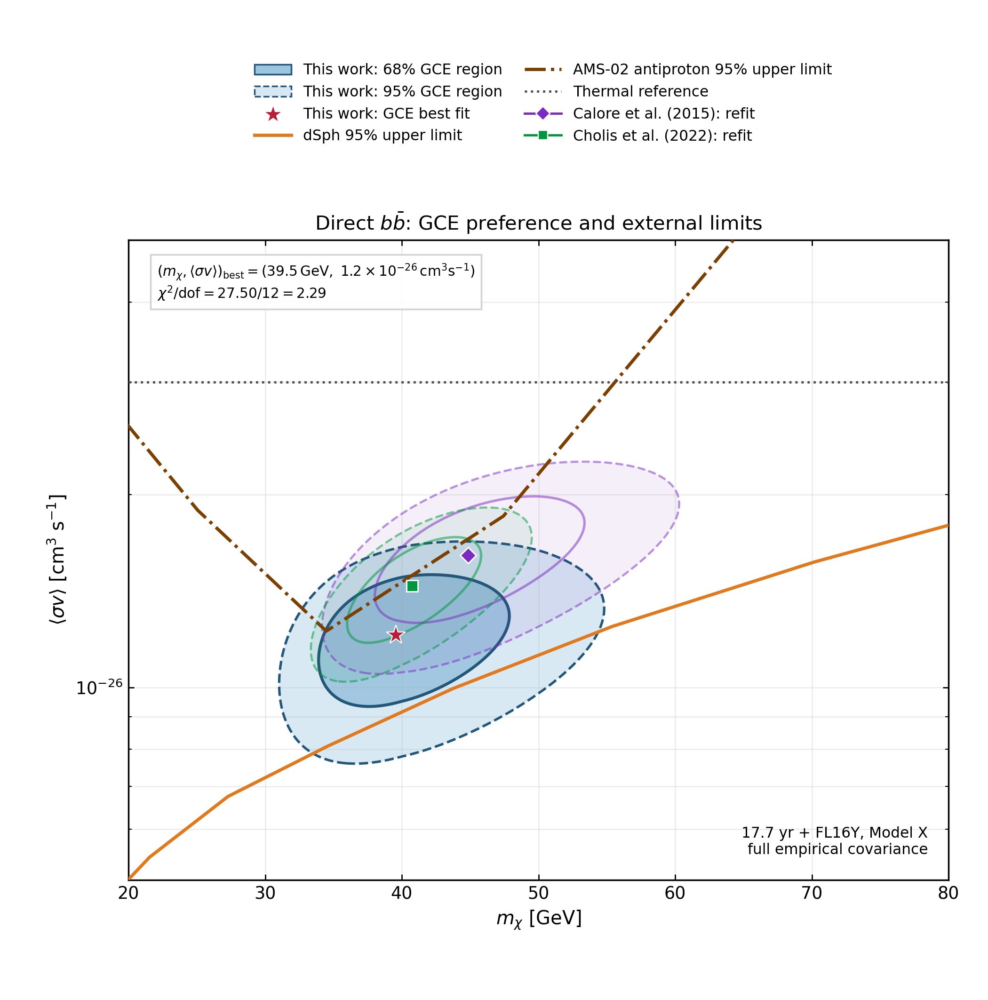
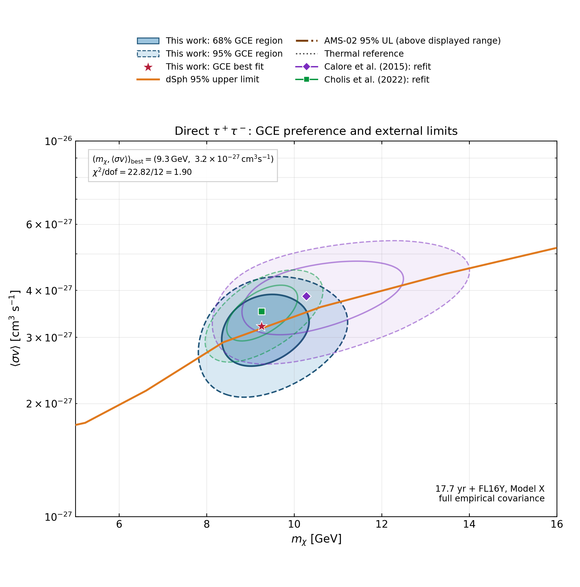

生成时间：2026-11-08T11:44:31+08:00
今日保留论文数：3
内容构成：今日新文 3 篇；补充推荐 0 篇；经典旧文精读 0 篇
阅读分层：重点精读 1 篇；相关简报 2 篇。精读依据科学贡献筛选，简报保留方法、结论及局限。
数据源警告
- 本次有 3 个数据源访问异常；完整错误已保留在运行日志中，日报只显示摘要。
- arXiv API：2 个分类访问异常，候选池可能不完整；程序会基于已成功获取的数据继续兜底。
- 其他来源：1 个异常。
- 主要错误类型：超时 2 次；其他 1 次。
高能天体物理重点
1. The accretion flow and jet of M87: broadband modelling across spatial scales
- 来源：arXiv / astro-ph.HE
- 链接：https://arxiv.org/abs/2610.26434
- 作者：Gutiérrez, Eduardo M., del Palacio, Santiago, Mazzei, Tomás Tobías
- 公告 / 来源日期：2026-10-20
- 阅读层级：重点精读
- 评分：novelty 8/10，importance 8/10，relevance 9/10，final 9.35/10
- 推荐理由：用不同有效角孔径逐点比较M87数据，结合可解电子输运的多区喷流与有风吸积流；同一模型可检验紧致230 GHz起源、跨尺度射电和伽马缺口，值得精读。
中文题目：把望远镜的视场尺度放进模型：M87 的毫米核心、喷流与未解释的伽马射线
做了什么：M87 的中心同时有热吸积流和相对论喷流。不同射电望远镜虽然都指向中心，所量到的却可能分别是视界附近、喷流底部或更长一段喷流。作者重用2017年事件视界望远镜（EHT）的多波段观测，把每个射电通量与相应角分辨率所覆盖的模型通量比较：把半个波束全宽换成天空平面的有效半径，再按喷流倾角积分到对应高度。喷流以磁能为主要能量储备，作者沿它求解非热电子的持续注入、平流、同步辐射和绝热冷却，另用有风的辐射低效吸积流（RIAF）计算热辐射。
两种代表性模型都能描述低频射电与X射线；只含该类非热喷流的方案给出约40%的EHT紧致230 GHz通量，而喷流加RIAF的方案能补上缺口。在后者中，EHT孔径映射到约25个引力半径，低于手调的喷流起点50个引力半径，因此这个模型的紧致毫米光来自吸积流。45个数据点的描述性χ²约从93降到51，但参数是手调的，也未遍历含热喷流或盘喷流混合的全部模型。磁占优喷流的逆康普顿辐射远低于观测伽马流量，所以该模型还需要另一处区域或另一种辐射过程。
为什么重要：这项工作的推进是把空间分辨率变成可用于拆分组分的观测信息。一个无空间结构的宽带谱可以靠调整粒子与磁场把各段接上，却很难同时解释同频率下不同角尺度的通量。M87已有射电图像、偏振和不同孔径的准同时谱，模型可以问：增加的是一个视界附近组分，还是同一喷流沿高度积累的辐射？作者给出一个能同时通过多孔径谱比较的吸积流加喷流方案，并明确报告可见的光紫外残差和伽马缺口。这是对给定模型族的区分，不能独立确定毫米环的唯一物理起源。
理论 / 观测 / 仪器方法价值：可复用的方法有两层。先用外部观测锚定喷流宽度、速度、视角与Bondi尺度供气，再用守恒式和输运方程把磁场、电子谱、各高度辐射接起来。最后以各仪器实际响应覆盖的空间范围计算可观测量，而不是把同一总谱直接覆盖所有通量。本文先以尖锐孔径做近似，再画与观测匹配波束的合成图。对更精确的迁移应用，应该用真实干涉仪基线覆盖、波束卷积和空间滤波替代这一步近似，还要区分分辨率变化与时变引起的通量差异。
为什么应该关注：M87的TeV辐射是高能观测的关键问题。这里可借鉴的是从射电及X射线先约束可见喷流的能量分配，再检查这一组分能否同时提供伽马光子。作者方案的共动光子能量密度仅为磁能密度的千分之几，故同步自康普顿很弱；这给后续耀发分析提供了一个具体对照。若将LACT或其他甚高能望远镜的时序与毫米、X射线准同时资料比较，值得检验的是TeV状态变化是否也伴随磁场、偏振或核区组分变化。当前计算没有定位高能区，也没有以资料验证强子解释。
展开详细解读：文章讲解、背景、理论、重点章节、图表与相关工作
文章详细讲解
科学问题。 在M87上，把多波段光谱直接看成一个发光区，很容易误判毫米与X射线是否来自同一批电子。EHT能分辨几十微角秒；其他甚长基线干涉阵列、亚毫米阵列或较大孔径的设备收到更多外侧结构。作者研究的是2017年相对低态的观测，用不同观测尺度作为约束，判断吸积流与喷流各应承担哪部分辐射，同时检查模型能否在射电至伽马之间保持物理自洽。
怎么做。 RIAF用稳态、垂直积分的流体方程处理离子和电子不同温度及径向失质量，电子发同步、制动及康普顿辐射。喷流是连续的一维多区流：半宽与整体速度随高度按外部观测参数化，以质量和能量通量守恒决定场与密度；初始无非热电子，随后从磁能预算拨出一部分连续注入。电子随流向外走，能量由同步和绝热过程下降。每个高度的电子分布经自吸收、相对论多普勒变换再积分，得到特定孔径的喷流及反喷流通量。
关键证据。 图3将仅喷流和喷流加RIAF两个端点场景放在同一组45个射电到硬X射线点上比较。各尺度低频射电可由喷流给出，纯喷流却低估EHT及较大孔径的230 GHz，补充热吸积流后改善最明显。EHT有效半径为 $7.3\,R_{\rm g}$，按17度倾角对应 $z_*\simeq25\,R_{\rm g}$；双组分参数中的喷流起点是 $50\,R_{\rm g}$，它的直接喷流积分在这个最小孔径内为空。作者另外核到热流230 GHz发射约91%落在反投影的小孔径内，因此添加整个热流谱的误差约为一成。这两步共同决定“模型中EHT通量由吸积流产生”的具体含义。
能量预算。 用Bondi尺度供给与小尺度偏振约束锚定质量流率，采用风指数0.4，得到近黑洞流率 $1.1\times10^{-5}\dot M_{\rm Edd}$。每一束外流约 $1.2\times10^{43}\,{\rm erg\,s^{-1}}$，各约为近视界静质量流功率的14%，双束合计约四分之一；这并非几十百万年射电晕平均功率的独立测量。向非热电子注入的功率比例约1.8%。在这组参数中，同步光子和热流光子能量密度远小于喷流磁能密度，因此与射电、X射线匹配的电子并不会自动产生够亮的伽马组分。
局限与下一步。 此比较是代表性参数的手调，未给最优解误差、模型证据或全空间后验，不能把χ²差换成发现显著性。纯喷流模型未加热电子，双组分模型也未探索小孔径内两者共享通量的中间情形；喷流横截面均匀使合成图没有实际边缘增亮。光紫外在部分HST点低估达约两倍，可能涉及宿主扣除、时变或遗漏辐射。更可靠的后续应把横向结构、热电子、分辨率与偏振一同纳入，再用高能时序判别漏掉的成分。
关键结果是怎么做出来的
首先确定待比较的数据口径。2017年观测覆盖EHT的几十微角秒到远大于核心的射电尺度。作者取黑洞质量 $6.5\times10^9\,M_\odot$、距离16.8 Mpc和视角17度；这一几何下1毫角秒约262个引力半径。每台阵列保留自己的有效半径，同频不同仪器的数据点可以直接约束延展辐射的份额，不能事先平均成一个点。
第二步把磁化喷流变成可计算电子谱。宽度按 $z^{0.56}$ 增长，速度剖面参考射电运动学，初始磁化设为100。电磁能沿喷流分出一部分给整体加速与电子，电子沿流损失能量，因而下游分布不同于注入时的幂律。在双组分例中，注入谱指数约2.05，注入有效尺度约 $6840\,R_{\rm g}$，计算延续到 $1.2\times10^6\,R_{\rm g}$。这个长尺度积分很重要：低频光在底部易自吸收，主要从更远、更透明区域逃出。
第三步看图3不同颜色的孔径曲线。宽带图与射电密度图分别检查总体形状与相邻射电数据的差异。只用喷流可达到近似的X射线谱和低频射电，紧致230 GHz不足，ALMA/SMA较大孔径也偏低；添加热流后毫米段增强，同时保留其余尺度。两种模型均低于不少光紫外点，所以双组分改善不等于全波段都没有系统偏差。
第四步检查这一改善的计算口径。作者用观测误差加10%流量系统项比较45点，排除伽马数据及上限；两模型均不越所列上限。双组分与仅喷流描述性χ²约51和93，以7及5个手调参数作自由度分母得到约1.3和2.3。数值能描述两套示例的相对失配，不能作为求遍参数后得出的概率，也不能据此排斥其他纯喷流模型。
第五步用合成图对照空间诊断。图4把43 GHz图像按与VLBA近似的0.31毫角秒波束卷积，沿轴亮度变化与观测大体相似，宽度部分已按外部资料设定；缺少边缘增亮因此是模型结构的限制。图5用两频率共同波束计算谱指数：小波束在核心看到更倒转的谱，大波束混合光厚核心与光薄喷流后趋平。该检验不等于对原干涉可见度做了完整前向拟合。
最后检验未被拟合的伽马波段。共动同步光子与磁能密度之比不超过约0.003，热流靶光子对应不超过约0.001；在Thomson极限，这决定了散射相对同步的弱度。观测的伽马谱能量流量约为 $(2\text{–}5)\times10^{-12}\,{\rm erg\,cm^{-2}\,s^{-1}}$，与同步峰量级可比。缺口要求考虑额外过程；不同位置较低磁化、近黑洞重联和强子模型仍是尚待区分的解释。
展开背景、理论、公式、模型和章节导读
背景知识
M87是附近的低光度射电星系，中心黑洞质量达数十亿太阳质量并有可成像喷流。所谓射电“核心”既可能指接近黑洞的热发射，也可能是给定频率上喷流自吸收光深约为1的位置。EHT看见的毫米尺度与低频VLBI核心不必来自同一物理点。讨论“核心谱”前应先核每个波段的角分辨率和通量定义。
低供气率下，吸积流可能热、稀薄而厚，离子和电子来不及热平衡。局部释放的引力能可被平流带向黑洞或随风流失，只有一部分被辐射出去，这就是辐射低效的含义。强风会使内侧流率远小于远处供给，不能把Bondi半径估计的质量流直接乘光速平方就当视界的可用功率。本文借远处X射线供气及近处偏振允许范围连接两端。
喷流把物质和电磁能带走。相对论电子在磁场中放出同步辐射，也会吸收其同类光子；在低频率、自吸收强的区域，不是每个高度都能自由向外辐射。下游喷流变宽、密度和磁场下降，较低频光可以从更远处显现。一个几何均匀区即使近似总谱，也难复现频率依赖的发射尺度。
热流与喷流同样可以发毫米光，先前M87模型因此给过不同答案。有些多区喷流采用热电子承担亚毫米隆起，另一些把毫米光归给吸积流。本文解决的是在给定非热喷流和热流设定下，哪一个能同时解释各孔径，而非证明已有热喷流解都不可能。2017观测是相对低态，也不能直接推广到强TeV耀发。
逆康普顿散射用高能电子把软光子提到高能；电子既可散射自己的同步光子，也可散射外部光场。磁能密度很高时，同一电子会优先耗能于同步，且较高能散射还可能进入Klein–Nishina压低截面。知道射电到X射线的同步辐射，可以排查一种给定电子区的伽马能力，却不能单凭一个能量预算选出另一处发射区。
基础理论 / 方法脉络
用两端流率约束有风热流时，物理图像是流体向里走的同时不断失质量。径向流率采用正指数的幂律，内半径更小故流率降低；斜率是在特定吸积几何、流率锚点和发射模型下的有效参数。由此得到的电子温度和磁场使热同步形成毫米峰，康普顿化只给本文光学到X射线小的附加贡献。
给定喷流几何与速度，质量守恒把密度变化和截面面积、速度连起来；总能量守恒再把磁能、体运动、非热电子焓相连。若仍磁占优，场强大致随宽度及Lorentz因子增大而下降。可由增大喷流总功率提高场，同时减少电子所获份额而保持相近辐射，故单靠SED不能分别固定两者，更不能直接测出黑洞自旋。
稳态电子输运不是每个位置独立选一条幂律。上游已注入电子到达下一高度时冷却，局部又加入新电子，形成能谱累积与冷却折变。同步强冷却使注入指数约2的电子谱加陡到约3，光薄同步指数约负1，解释X射线谱能量分布较平。这个结果只在相应冷却区和电子能段成立，不能移到低频自吸收区。
辐射输运的关键变量是光深。均匀小段光薄时，发射量接近发射率乘路径；光厚时，强度趋于源函数。作者对每段利用这种解析近似并作多普勒变换；最内侧视线跨越的高度可能与该点高度相当，所以这一近似正好在最紧致、自吸收最强的区域最弱。用实际射线追踪检验这一点比单纯再调谱参数更有价值。
最后要将强度转换为仪器测到的通量。模型孔径由波束FWHM的一半近似，沿投影方向给定最大喷流高度。真实干涉仪不仅卷积亮度，也可能滤除宽结构；尖锐的高度切割没有复现这一完整过程。图3残差应解读成给定空间近似下的比较，图4和图5的同波束合成图提供额外而有限的形态验证。
公式与推导
以下从两端供气经喷流守恒、电子注入与输运走到孔径通量。除明确标注教学近似者，方程来自原文第2—3节。引力半径 $R_{\rm g}=GM_{\rm BH}/c^2$，Schwarzschild半径为 $2R_{\rm g}$；带撇号的量在喷流共动系定义。
1. 有风热流的质量预算。 §2.1与式(25)把外部供给和近黑洞流率联系起来：
$R_{\rm B}$是Bondi半径，$\dot M_{\rm B}$是其供气率；流率单位可用克每秒或同一 $\dot M_{\rm Edd}$ 归一化。两端比例均无量纲。原文实际从 $2\times10^4 R_{\rm g}$ 向内求结构、向Bondi尺度外推，以 $s=0.4$ 近似连接锚点，而非对整个半径范围直接成像测量失质量。
2. 几何与连续性。 式(1)—(3)以观测约束宽度和整体速度，进而给出密度：
$z$为沿轴高度，$\beta_{\rm j}c$为流速，$\Gamma_{\rm j}$为整体Lorentz因子，$\rho'$为共动静质量密度。稳态常质量流下，截面越大、流越快，单位体积所含静质量越小。本文取近抛物形 $w=0.56$，而非由辐射数据独立拟合所有几何参数。
3. 把磁能放进能量守恒。 由式(4)—(6)，忽略喷流辐射对总能流的显著反馈时，
$L_{\rm j}$为单束喷流能流，单位erg/s，$h'$是以静质量能归一的比焓；磁化 $\sigma'$ 与 $\mu$ 都无量纲。初始 $\sigma'$ 较高，允许 $\Gamma_{\rm j}$ 或电子焓增长而磁能占比下降。代入连续性即可得场强，检验给定加速剖面是否耗尽磁能。
4. 由功率计算场强。 原文式(7)：
采用高斯制，根号内是能量/长度，除以半径后得磁场量纲。在 $\sigma'\gg1$ 且速度剖面固定时，$B'$随 $\sqrt{L_{\rm j}}$ 增长、随 $\Gamma_{\rm j}R_{\rm j}$ 增大而降低。由此可以理解为什么调大总功率、同时少给电子能量，会构成一条难用光谱消除的退化方向。
5. 磁能分给电子。 式(12)、(16)及(17)规定注入的空间分布和能谱；归一由总功率条件确定：
$L_0$为功率尺度，$dL_{\rm inj}/dz$为每单位高度的注入功率，$\epsilon_{\rm e}$是无量纲份额。$\gamma'$为电子Lorentz因子，$q'_{\rm e}$表示每单位体积、时间和Lorentz因子的注入率；截止由加速与冷却平衡决定。$a_{\rm e}$约为0、低于指数截断时，每对数高度注入近似等功率。累计已注入能量不能当成局部剩余非热能量。
6. 求电子的平流与冷却。 令 $A=\pi R_{\rm j}^2$，式(18)可写为
$n'_{\rm e}$为共动每体积每Lorentz因子的数密度，$\dot\gamma'$是同步及绝热能量变化率，冷却时为负。第一项是进入和离开空间单元的净粒子流，第二项描述粒子从高能格移向低能格；右边增加新电子。作者将它化成式(19)的沿高度通量守恒形式，以一阶隐式迎风离散，未包含空间扩散。
7. 用冷却谱理解X射线。 这一步是第3节讨论的教学展开。在局部稳态、强同步损失 $\dot\gamma'=-b\gamma'^2$、忽略平流与逃逸的极限，积分能量守恒式得到
$b$的单位为每秒，$u$是无量纲积分变量。假设所看能段远离截断且同步光薄；若 $p\simeq2$，便有 $\nu F_\nu$ 近似平坦。完整计算用上一步的空间输运，不以这个局部解析谱替代；自吸收区更不能用该幂律。
8. 把各段辐射变成孔径通量。 式(21)—(23)的物理内容可写成
$I_\nu$为每立体角的比强度，$j'_{\nu'}$和$\alpha'_{\nu'}$分别是共动发射率与吸收系数，$\tau'$为无量纲光深；$\psi$表示横向相对位置，$\mathcal D_{\rm j}$为多普勒因子。将强度在天空投影面积积分、除距离平方给流量，喷流及反喷流分别积分到 $z_*$，双组分再加热流谱。该高度截断依赖半波束近似，小孔径比真实干涉仪传递函数更简单。
9. 比较两组模型。 原文第3节给出
每个 $i$ 的模型通量取该点所属孔径，分子与分母都为通量平方，统计量无量纲。10%是作者加入的额外系统尺度；伽马数据和上限不进入求和。比较约51与93可量化两套手调解的残差区别，不能给普适的置信比或参数误差。
10. 检查高能预测缺口。 第2.2.2及4.4节用下列Thomson极限能量密度关系作诊断：
两能量密度单位均为erg/cm³。对同一电子群、近各向同性靶场和Thomson散射，这一比值给能量损失及大致辐射比例；Klein–Nishina区不能用它增强预测。作者所设磁占优喷流中，该比例太小，解释了为什么拟合射电和X射线并不会自动拟合伽马。它约束这一模型中的SSC，不是对全部喷流轻子模型的排除。
模型拟合 / 应用方法
数据使用2017年EHT多波段活动，射电点按所用波束分为7个有效孔径，从 $7.3$ 到 $3.5\times10^5\,R_{\rm g}$；最后一组等价包括全喷流，亚毫米阵列SMA、光紫外及X射线比较全喷流。采用外部黑洞质量、距离、视角和喷流宽度/加速资料；RIAF取 $\alpha=0.1$、$\beta=9$、$\delta_{\rm e}=0.3$。这些条件是模型输入，不是此次通过统计独立测得。
作者对仅喷流和喷流加RIAF两组代表性参数手调。包括喷流功率、起点、电子注入空间斜率、谱指数和加速电子能量份额；双组分另调外流率和风指数。两者共用许多几何输入。表1同时区分观测固定、假设、手调和派生参数；用这一列可以避免把电子注入终止尺度或初始磁化读成新测量。
描述性残差使用各点自身孔径和观测误差再加10%相对项。两个场景的比较支持双组分能更好解释毫米段，且X射线仍由喷流主导。它不构成穷尽性模型选择：双组分本来就是热流亮度达到EHT允许上沿的一个端点，且喷流被手调到小孔径外开始。未完成含热喷流、盘喷流同时贡献的中间解或其后验检验。
用同波束合成图与射电谱指数提供交叉诊断。用图4可检查沿喷流亮度、图5可检查自吸收核心与下游变软；横向边缘增亮的缺失是已知不吻合，而非观测缺陷。作者在双组分模型中比较了射线追踪修正，所给影响至多约15%，与采用的不确定度相近；仅喷流更强自吸收，近似误差更显著。未对全观测可见度做联合拟合。
系统性退化最直接的例子是2毫角秒处模型共动场约0.2 G，比独立谱指数梯度解释低约2—6倍。把喷流功率增加3—10倍并降低给电子的份额，仍可给相近SED及更强磁场。本文的近黑洞吸积率也随固定的电子加热和磁压选择变化；光紫外偏低、偏振和更高分辨率可作为未来区分手段。当前不能用这套手调功率唯一反推自旋或吸积态。
重点章节 / 结果段落怎么读
-
§1与图1：先记住同一“核心”在不同波束中的物理尺寸不同。图1从视场半径连到喷流积分高度，解释为什么后文不会把全部射电通量拟到一个谱线上。
-
§2.1—2.2：从流率随半径减小的热流走到磁占优喷流。重点区分每束喷流总功率、已注入电子的累计功率和局部非热电子分布，后者才决定同步发射。
-
§2.3与表1：读Bondi和EHT两个流率锚点、投影几何、固定/假设/手调参数。此处决定推断条件和每个观测点的可比口径。
-
§3与图3—5：先读同色孔径曲线与残差，再读同波束合成图。明确230 GHz改善是模型特定比较，光紫外残差和缺少边缘增亮仍存在。
-
§4.3—4.6与附录A：将场强—功率退化、弱逆康普顿与手调限制一起读。附录单参数扫描不等于多参数后验，给出更适合未来多波段联合检验的方向。
关键图表与解读
图1：热吸积流、喷流与望远镜有效孔径

图注：模型示意图。厚的辐射低效吸积流带湍动磁场并经风失质量，流率向内按半径的s次方降低；视界吸积功率的一部分分别供给初始磁占优的喷流和反喷流。红色虚线环标示电子从喷流起点至注入尺度连续注入，沿流冷却。内热流产生紧致230 GHz辐射，较低频光可从更高处逃出，图示15与2.3 GHz。右侧用天空平面半波束全宽作为有效半径，累加热流总谱与相应反投影高度以下的喷流辐射。
怎么看这张图：看右边由半波束宽度到沿轴高度的投影。不同望远镜采样的物理长度不同；图是模型几何，不是直接成像证明盘或喷流的边界。 解释多尺度谱拟合的关键输入。
来源与置信度：arXiv HTML；source verified；https://arxiv.org/html/2610.26434v1/model_schematic.png
图3：不同空间尺度的谱与残差

图注：仅喷流（上组）及喷流加热吸积流（下组）与2017年EHT多波段数据比较。左为射电到硬X射线的宽带能谱，右为射电流量密度。颜色对应7组有效孔径，从7.3至350000个引力半径，最后一组包括全喷流；各点与同色曲线比较，符号区分仪器。下组虚线为各孔径的喷流与反喷流，点划线为热流，实线为二者总和。亚毫米阵列、光/紫外及X射线用全喷流口径。右图近频点为清楚可横移至0.1 dex；小下板为观测减模型后除以模型的残差。
怎么看这张图：先对准同色数据和曲线，再看最紧凑的230 GHz点如何被热流补足。部分光紫外残差依然存在；各条谱由代表性手调参数算出，不是后验区间。 直接对照两种场景在相同观测口径下的关键证据。
来源与置信度：arXiv HTML；source verified；https://arxiv.org/html/2610.26434v1/SED_FluxDensity.svg
图5：共同波束下的合成谱指数图

图注：喷流加热流模型的合成谱指数图，流量密度随频率的α次方变化。左为22–43 GHz、右为43–86 GHz；各自两频图像卷积到较低频的圆形高斯波束，半高全宽分别1.2和0.31毫角秒，灰圆标示波束。任一频率低于每波束3 mJy的像素留白；白线为较低频强度等高线，从每波束3 mJy起按平方根2的倍数递增。接近侧喷流位置角为负72度。
怎么看这张图：较大波束混合核心和喷流，谱更平；较小波束看到核心的倒转与下游较软。合成图未描绘真实观测中的横向边缘增亮。 独立呈现分辨率、吸收与空间结构的联系。
来源与置信度：arXiv HTML；source verified；https://arxiv.org/html/2610.26434v1/Map_spix.png
强相关工作
同一批数据来自EHT多波段合作组的2017年活动，已经指出源在较低态、广角分辨率和不同时波段会混合多个空间区。原始活动提供谱和成像，本文重用数据并为各测量建立不同积分孔径，因此是一项物理再解释，没有新增EHT观测。后续的2018活动及TeV耀发提供不同源态的检查，不能把2017的手调参数直接搬过去。
Lucchini等的多区喷流模型曾用喷流结构、热电子与SED一同研究M87。它说明早期喷流解不只是一个均匀单区，热电子允许亚毫米贡献；本文增加持续注入和冷却输运，并让同频各空间尺度保留独立口径。吸积部分可回到Yuan与Narayan的热吸积综述理解离子电子不平衡、平流和风损失。三类工作各解决不同问题：数据基线、竞争喷流解释和流体背景。
同一事件 / 同类源线索：
相似工作：
基础理论 / 方法工作：
相反观点 / 张力线索：
相关简报
1. Deep X-ray Observations of the Gamma-ray Bright Pulsar Wind Nebula HESS J1303-631
- 来源：arXiv / astro-ph.HE
- 链接：https://arxiv.org/abs/2610.26723
- 作者：Gagnon, Seth, Kargaltsev, Oleg, Lin, Yichao, Hare, Jeremy, Eagle, Jordan
- 公告 / 来源日期：2026-10-20
- 阅读层级：相关简报
- 评分：novelty 7/10，importance 8/10，relevance 10/10，final 9.40/10
- 推荐理由：Chandra与XMM共210 ks分辨脉冲星、邻近点源及弱延展X射线，给HESS TeV星云的尺度与谱加入实际新约束；谱软硬误差大，按简报。
中文题目：深度X射线观测拆开HESS J1303−631的脉冲星与弱风云
问题、方法与结论：HESS J1303−631的TeV亮区偏离脉冲星PSR J1301−6305，且随能量升高变得更紧致。作者联合Chandra、XMM-Newton与既有射电和伽马图像。Chandra成像及联合光谱实际使用9次近轴观测，共103.37 ks，排除4.65 ks的旧离轴曝光；其分辨率拆开了XMM仍混叠的脉冲星与邻近点源。径向轮廓在约2角秒外超过模拟点扩散函数，支持附近有弱延展辐射。结合既有硬GeV对应体和TeV形态，支持一个X射线远比TeV区紧致的演化脉冲星风云。
意义与贡献：新信息是把以前混合的中心光子分成脉冲星、点源和弱风云，并用跨波段形态独立检查关联。紧致X射线与宽TeV区符合不同能量电子的传播和冷却，但形态相接只能加权支持这一解释，尚不能从本研究直接反演唯一输运系数或断定宿主反向激波。
可借鉴之处：可借鉴的是以真实曝光和MARX模拟点扩散函数做径向对照、分区域拟合吸收幂律，再核查不同角分辨率图像。对TeV源的多波段配对，先看仪器能否拆开同亮度邻源，再比较射电、X射线与TeV峰位；这一场的射电弥散向西、X射线延展及TeV向东，不能全归一个星云。
局限与关注点：吸收柱固定为此前XMM结果，亮度采用4.7 kpc。紧致和延展光子指数分别为2.98±0.53和1.20±1.25，延展区净计数14.68±32.38，不能声称已量到可靠的径向硬化。旧曝光太弱也不能定自行。偶获X射线耀发与TeV中心分离较远，可能是前主序星耀发，伴星解释未排除，不应列作该TeV源的物理对应体。
图3：X射线、TeV与射电的多尺度对照

图注：PSR J1301−6305及HESS J1303−631的多波段视图。上左为约30角分的XMM-Newton EPIC 0.5–10 keV拼图（红橙），绿线是H.E.S.S. TeV面亮度等值线；上右为MeerKAT GPS 1.3 GHz（蓝），显示脉冲星以东约15角分的壳状遗迹候选和向西的弥散射电，箭头标出脉冲星。下面两排在相同视场比较Chandra ACIS-S3（0.7–7 keV、约103 ks）、三个ObsID合并的XMM-Newton（0.5–10 keV、约130 ks）、新的单次XMM-Newton观测（ObsID 0931990101、0.7–7 keV、约73 ks）和MeerKAT。ACIS图上有2角分标尺。
怎么看这张图：先看大图中TeV等高线、脉冲星与射电结构的偏移，再在相同小视场检查邻点源在Chandra中分开、在XMM中混叠。不同颜色是不同波段显示，不能当成通量比例。 完整六面板直接检验X射线、射电与TeV空间对应及分辨率限制。
来源与置信度：arXiv PDF / full figure crop；source verified；https://arxiv.org/pdf/2610.26723v1#page=6
2. Dark Matter Interpretations of the Galactic Center Gamma-Ray Excess with 18 Years of Fermi-LAT Data and the FL16Y Source Catalog
- 来源：arXiv / astro-ph.HE
- 链接：https://arxiv.org/abs/2610.26648
- 作者：Kim, Sang Hwan, Kang, Hae Barg, Shin, Seodong
- 公告 / 来源日期：2026-10-20
- 阅读层级：相关简报
- 评分：novelty 7/10，importance 8/10，relevance 9/10，final 9.05/10
- 推荐理由：更新17.7年Fermi数据和FL16Y目录，按同一规范比较80弥散模型、30矮星系与反质子；对GCE暗物质通道有具体新交叉约束，仍条件于模板及传播，按简报。
中文题目：银河中心GeV余量再检验：哪些暗物质解释仍过得了矮星系检验？
问题、方法与结论：银河中心的GeV伽马余量对弥散背景建模敏感。作者用17.7年Fermi-LAT数据和FL16Y源表，在0.275–51.93 GeV逐能段拟合模板，比较80套银河弥散模型，并用22个银河盘对照区估计跨能段系统协方差。随后把余量要求的暗物质质量和湮灭率，与30个矮球状星系的联合95%限上和AMS-02反质子结果比较。选定Model X下，矮星系排除直接底夸克、粲夸克、轻夸克与胶子通道的68%偏好区；直接τ和部分四τ级联仍留有参数空间，但各自最佳点未通过矮星系限上。
意义与贡献：贡献是将更长曝光和更新点源遮罩下的余量谱，与相同数据时段的独立矮星系约束放在同一粒子模型口径。能拟合银河中心谱形与能通过其他天空目标是两项要求；参数区重叠只是未被该检验排除，不能据此主张发现暗物质。
可借鉴之处：可借鉴的是把背景不确定性分两层：80模型的逐能段包络只显示模型跨度，不是置信区间；实际谱拟合使用22个对照区所得完整协方差及逐段统计误差。对每个矮星系保留逐能段似然，再剖面化其暗物质密度平方积分的不确定度，比直接比较几个流量点更合适。
局限与关注点：结论依赖选定中心余量模板、矮星系暗物质分布及粒子谱。壳上中介粒子质量会改变级联光子和反质子谱；部分四底级联仍可相容，但不是所有参数都可行。采用BIG传播的反质子限有银河晕高度剖面化，却未合入完整理论通量误差，也不应与矮星系的单侧95%阈值直接等同。
图6：两种直接湮灭通道与矮星系限上


图注：Majorana暗物质直接湮灭到底夸克对（左）或τ轻子对（右）时，横轴为暗物质质量，纵轴为速度平均湮灭截面。深蓝和浅蓝为17.7年Model X银河中心余量谱及所用协方差得到的联合68%和95%区域，红星为最佳点。橙实线为30个矮球状星系联合95%上限（17.7年、FL16Y并含密度积分不确定度），左图棕色点划线为AMS-02反质子上限，曲线上方在各自假设下排除。黑点线为常用热遗迹参照；绿、紫轮廓和标记是对既有两套余量谱重新拟合。反质子不约束所画τ通道。
怎么看这张图：先比同一面板的蓝区与橙线：底夸克偏好区整体受压，τ通道尚有部分区域低于限上，但红星仍超线。比较的是各数据集在指定假设下的相容性。 同时展示最佳点排除与部分区域相容的区别。
来源与置信度：arXiv HTML；source verified；https://arxiv.org/html/2610.26648v1/Figures/gce_bb_contour_dsph_pbar_provisional17p7_mathtext_v3_mchi_v4_fit_1decimal_v6.png；https://arxiv.org/html/2610.26648v1/Figures/gce_tautau_contour_dsph_pbar_fresh_layout_v4_gce_focus_provisional17p7_mchi_v5_fit_1decimal_v7.png
说明
评分由 LLM 给出初评，再由本地阈值策略过滤；IACT、TeV 伽马射线和高能中微子天文学按重点方向处理。